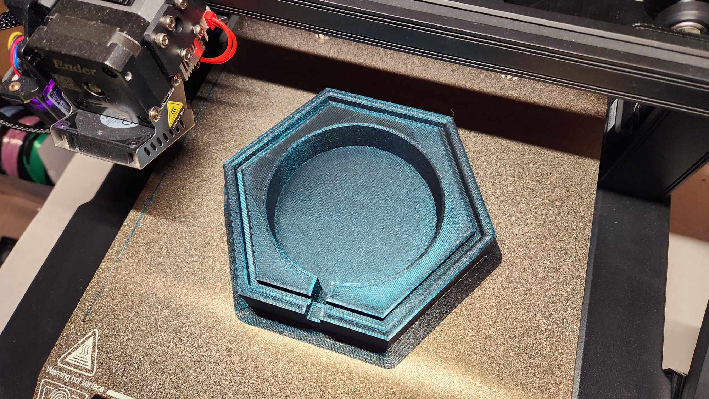

With a new plan, I created the model for the bass. I made sure to cut a small opening for the cord to pass through.
First thing I did was make a mini model to test out my design and figure out how wide the channels holding walls would need to be when printing a 3mm thick panel wall for my lamp. I had tapered the wall edges to be able to get a snug fit on the walls.
While my mini model held up well, I didn't really like the look of the pentegon. So I decided moving forward to change the shape to a hexagon intead.
With a new plan, I created the model for the bass. I made sure to cut a small opening for the cord to pass through.
A printed the base and it only took 11 1/2 hours!
Next up was designing the panels for each wall. I used a zodiac sign of each of my family memebers with lots of added stars.

I arrived at the Mill only to discover this sign! NO ARYCLIC ALLOWED! I went on a wild goose
chase to be able to cut this acrylic. I went to The 8, and they said the "shop" was closed for
the night. I went to Area 01, and they wanted payment. So I came back the next day to The 8,
and guess what... the person the day prior was wrong. The shop is closed at 6, but the laser
cutting was open until midnight!
I was in The 8 for almost 8 hours cutting my acrylic! 3 different people had shifts while I was there!
I needed to do some test printing for the side panels of the lamp. I started my first test good, with no issues on cutting. Then, the laser stopped cutting all the way through my acrylic! UGH!!

Luckily there was someone who was from the shop there that was able to help me! He said to cut faster and add another pass to my cut. When 2 passes didn't work, he said to make sure they come out before I lift the acrylic. Then gave me a tip that using tape to lift the pieces will let me know when the piece is fully cut!
After several test sizes, 61mm width was a perfect fit... or so it seemed!

All the fails of my actual walls. It didn't seem to hold up the same once I extended my pieces to the full 8.5" length.
I was running out of acrylic now and needed the next cut to fit. So, I went smaller than a "perfectly tight fit", but it worked. The only issue is now the pieces are losely fit into the base and it's hard to assemble the lamp. I used tape to keep the panels together while I assembled the panels.
So far, I have designed one side of the mold (of a mold). My brain hurt on this project trying to figure out exactly how this was coming together.
>
Random guy in The 8 - For helping me to get the acrylic cut and with the great
tip about using tape!
Niharthi - From my 519 class who recommended acrylic for the sides over 3D printing
Deyi - For recommending Fusion 360